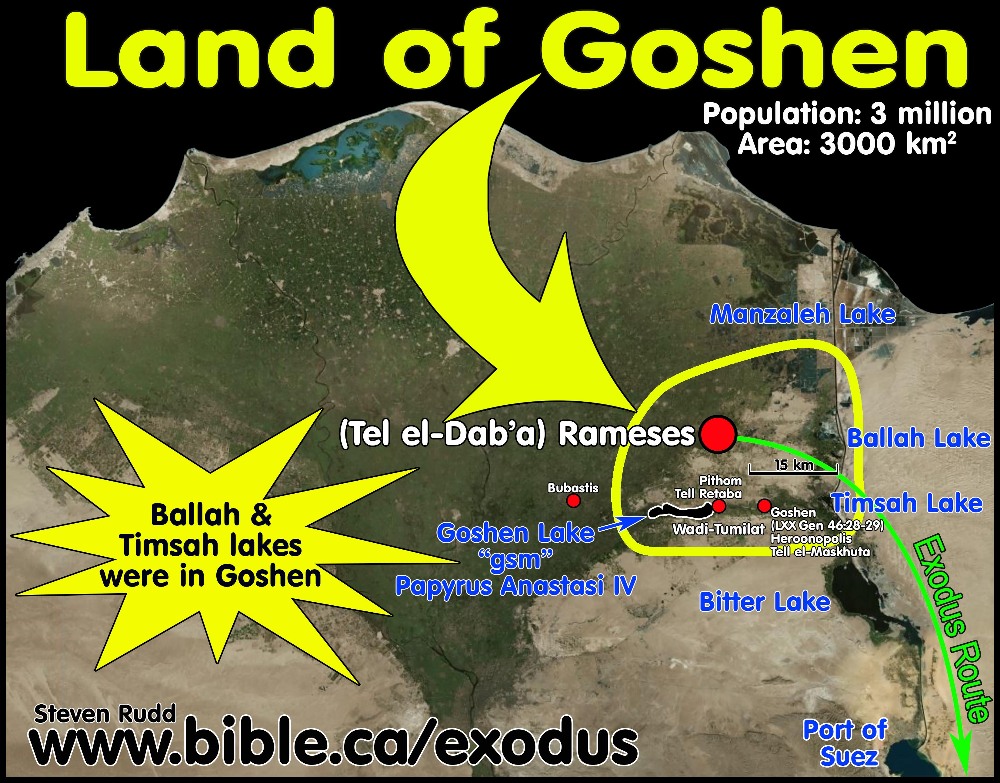
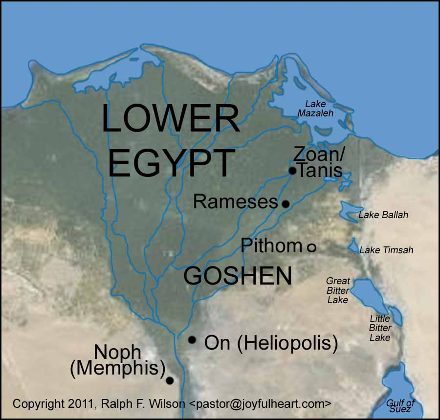

Êxodo 1-4
Período: ~1526-1446 a.C. (XVIII Dinastia do Egito)
Este período corresponde ao Novo Reino do Egito, uma era de grande poder imperial. O "novo rei que não conhecera a José" (Êxodo 1:8) provavelmente foi um faraó da XVIII Dinastia, após a expulsão dos Hicsos (governantes semitas). A mudança de dinastia trouxe xenofobia e políticas nacionalistas, transformando os israelitas de hóspedes favorecidos em escravos.
Contexto Arqueológico: As cidades de Pitom (Tell el-Retabeh) e Ramessés (Pi-Ramessés, moderna Qantir) foram identificadas arqueologicamente. Ramessés foi a capital construída por Ramsés II, embora alguns estudiosos situem o Êxodo antes de seu reinado. Evidências de trabalho forçado em larga escala foram encontradas nessas regiões.
Os israelitas viviam na região de Gósen, no delta do Nilo, onde construíram as cidades-armazéns de Pitom e Ramessés para o Faraó.
Fonte: Bible.ca - Exodus Route Archaeological Maps
Localização arqueológica das cidades construídas pelos israelitas escravizados.
Fonte: Lars Haukeland - Biblical Archaeology
Êxodo 1:8-14 (NVI):
8 Levantou-se, então, um novo rei sobre o Egito, que não conhecera a José. 9 Este disse ao seu povo: "Vejam! Os israelitas são agora numerosos e mais poderosos do que nós. 10 É preciso que ajamos astutamente para com eles, para que não se multipliquem e, em caso de guerra, não se aliem aos nossos inimigos, lutem contra nós e fujam do país". 11 Estabeleceram, pois, sobre eles chefes de trabalhos forçados, para os oprimir com tarefas pesadas. E assim os israelitas construíram para o faraó as cidades-armazéns de Pitom e Ramessés. 12 Todavia, quanto mais os oprimiam, mais eles se multiplicavam e se espalhavam; de maneira que os egípcios se inquietavam por causa dos israelitas. 13 Por isso os egípcios os sujeitaram a cruel escravidão. 14 Tornaram-lhes a vida amarga, impondo-lhes a árdua tarefa de fazer tijolos de barro e de trabalhar nos campos. Em todo o trabalho que lhes impunham, os egípcios os tratavam com brutalidade.
Êxodo 2:1-10 (NVI):
1 Um homem da tribo de Levi casou-se com uma mulher da mesma tribo, 2 e ela engravidou e deu à luz um filho. Vendo que era bonito, escondeu-o por três meses. 3 Não podendo mais escondê-lo, pegou um cesto feito de papiro e o revestiu de piche e betume. Colocou nele o menino e o pôs entre os juncos, à margem do Nilo. 4 A irmã do menino ficou observando de longe para ver o que lhe aconteceria. 5 A filha do faraó desceu para banhar-se no Nilo, enquanto as suas servas caminhavam pela margem do rio. Ela viu o cesto entre os juncos e mandou sua criada apanhá-lo. 6 Ao abri-lo, viu um bebê chorando. Teve pena dele e disse: "Este é um dos meninos hebreus". 7 Então a irmã do menino aproximou-se e perguntou à filha do faraó: "A senhora quer que eu vá chamar uma mulher hebreia para amamentar o bebê?" 8 "Vá", respondeu ela. E a moça foi e chamou a mãe do menino. 9 Então a filha do faraó disse à mulher: "Leve este menino e amamente-o para mim, e eu lhe pagarei". A mulher levou o menino e o amamentou. 10 Tendo o menino crescido, ela o levou à filha do faraó, que o adotou e lhe deu o nome de Moisés, dizendo: "Eu o tirei das águas".
Êxodo 3:1-10 (NVI):
1 Moisés estava cuidando do rebanho de seu sogro Jetro, sacerdote de Midiã. Levou o rebanho para o outro lado do deserto e chegou a Horebe, o monte de Deus. 2 Ali o Anjo do Senhor lhe apareceu numa chama de fogo que saía do meio de uma sarça. Moisés viu que, embora a sarça estivesse em chamas, não se consumia. 3 "Que impressionante!", pensou. "Vou ver de perto porque a sarça não se queima." 4 Quando o Senhor viu que ele se aproximava para observar, Deus o chamou do meio da sarça: "Moisés! Moisés!" "Eis-me aqui", respondeu ele. 5 Então disse Deus: "Não se aproxime. Tire as sandálias dos pés, pois o lugar em que você está é terra santa". 6 Disse ainda: "Eu sou o Deus de seu pai, o Deus de Abraão, o Deus de Isaque, o Deus de Jacó". Então Moisés cobriu o rosto, pois teve medo de olhar para Deus. 7 Disse o Senhor: "De fato tenho visto a opressão sobre o meu povo no Egito e tenho escutado o seu clamor por causa dos seus feitores, e sei quanto eles estão sofrendo. 8 Por isso desci para livrá-los das mãos dos egípcios e tirá-los daquela terra para uma terra boa e vasta, onde manam leite e mel: a terra dos cananeus, dos hititas, dos amorreus, dos ferezeus, dos heveus e dos jebuseus. 9 Pois o clamor dos israelitas chegou a mim, e tenho visto como os egípcios os oprimem. 10 Agora, pois, vá! Eu o envio ao faraó para tirar do Egito o meu povo, os israelitas".
Êxodo 4:10-17 (NVI):
10 Moisés disse ao Senhor: "Ó Senhor! Nunca tive facilidade para falar, nem no passado nem agora que falaste a teu servo. Tenho a língua pesada e a fala arrastada". 11 O Senhor lhe respondeu: "Quem deu boca ao homem? Quem o torna mudo ou surdo, capaz de ver ou cego? Não sou eu, o Senhor? 12 Agora, pois, vá; eu o ajudarei a falar e lhe direi o que dizer". 13 Moisés, porém, insistiu: "Ah, Senhor! Peço-te que envies outra pessoa". 14 Então o Senhor se irou com Moisés e lhe disse: "Você não tem o seu irmão Arão, o levita? Eu sei que ele fala bem. Ele já está vindo ao seu encontro e se alegrará ao vê-lo. 15 Você falará com ele e lhe dirá o que ele deve dizer. Eu os ajudarei a falar e ensinarei o que deverão fazer. 16 Ele falará por você ao povo, e ele será sua boca, e você será como Deus para ele. 17 Leve também esta vara, com a qual você fará os sinais miraculosos".
Os capítulos iniciais do livro de Êxodo (1-4) servem como um prólogo dramático para a grandiosa narrativa da libertação de Israel da escravidão egípcia. Este bloco temático estabelece o cenário da opressão brutal sofrida pelos descendentes de Jacó, detalhando a transição de um período de favor para uma servidão cruel sob um faraó que
não conhecia José [1]. A multiplicação milagrosa dos israelitas, apesar da perseguição e dos decretos genocidas, sublinha a fidelidade de Deus às Suas promessas pactuais feitas a Abraão, Isaque e Jacó [2].
Neste contexto de desespero, Deus intervém de forma soberana e providencial, levantando Moisés. O nascimento e a preservação de Moisés, resgatado das águas do Nilo e criado na corte egípcia, são atos divinos que preparam o futuro libertador [3]. O clímax deste bloco ocorre com o chamado de Moisés na sarça ardente, onde Deus se revela como o 'EU SOU' (Yahweh), comissionando-o para ser o instrumento de Sua libertação [4].
Este bloco não apenas narra o início da história de redenção de Israel, mas também estabelece temas teológicos fundamentais como a soberania divina sobre a história humana, a fidelidade de Deus à Sua aliança, a providência em meio ao sofrimento e a natureza do chamado divino. A opressão egípcia serve como pano de fundo para a manifestação gloriosa do poder de Deus, que ouve o clamor de Seu povo e age para salvá-lo, preparando o caminho para a formação de uma nação santa e o estabelecimento de Sua lei.
Para uma compreensão aprofundada dos primeiros capítulos de Êxodo, é imperativo mergulhar no contexto histórico e cultural do Antigo Egito, especialmente durante o período em que os eventos narrados teriam ocorrido. A transição da era patriarcal, onde os israelitas desfrutavam de favor sob José, para um período de severa opressão, reflete mudanças políticas e sociais significativas no Egito [1]. A maioria dos estudiosos situa a opressão israelita e o Êxodo no período do Novo Reino do Egito (aproximadamente 1550-1070 a.C.), com muitos apontando para as 18ª ou 19ª dinastias (c. 1450-1250 a.C.) como o provável cenário para os eventos [1].
O versículo chave para entender essa mudança é Êxodo 1:8: “Levantou-se, então, novo rei sobre o Egito, que não conhecera a José”. Este “novo rei” é frequentemente associado a um faraó que ascendeu ao poder após a expulsão dos Hicsos, um grupo de governantes estrangeiros que dominou o Egito por um período. Os Hicsos, sendo de origem semita, podem ter tido uma relação mais tolerante com os israelitas. Com a ascensão de uma dinastia egípcia nativa, houve uma política de xenofobia e nacionalismo, que via os israelitas, um grupo étnico distinto e em rápido crescimento, como uma ameaça potencial à segurança e estabilidade do Egito [1].
A sociedade egípcia era rigidamente hierárquica, com o faraó no ápice, considerado uma divindade viva. A mão de obra escrava era fundamental para os vastos projetos de construção do império, incluindo templos, monumentos e cidades-armazéns. As cidades de Pitom e Ramessés, mencionadas em Êxodo 1:11, são exemplos de tais projetos, construídas com o trabalho forçado dos israelitas. A religião egípcia, com seu complexo panteão de deuses e rituais, contrastava fortemente com o monoteísmo embrionário de Israel, o que exacerbou ainda mais a percepção dos hebreus como estrangeiros e uma ameaça cultural [1].
A geografia também desempenha um papel crucial. O Egito, com o Nilo como sua artéria vital, era uma civilização fluvial. O Nilo, que era a fonte de vida e fertilidade, tornou-se, ironicamente, um instrumento de morte para os bebês hebreus por decreto do faraó (Êxodo 1:22). A rota do Êxodo, embora debatida, geralmente envolve a saída do Egito, a travessia do Mar Vermelho e a jornada pelo deserto do Sinai em direção à Terra Prometida. A arqueologia, embora não forneça evidências diretas e inequívocas do Êxodo em documentos egípcios, oferece insights sobre a vida no Egito Antigo e a construção de cidades como Ramessés, corroborando o tipo de trabalho forçado descrito na Bíblia [5]. No entanto, a ausência de registros egípcios sobre o Êxodo é um ponto de debate entre historiadores e arqueólogos, com algumas teorias sugerindo que a narrativa foi textualizada em períodos posteriores [6].
O capítulo 1 de Êxodo serve como uma ponte crucial entre Gênesis e o restante da narrativa do Êxodo, estabelecendo o cenário de opressão que clama por libertação. A lista genealógica inicial (Êxodo 1:1-5) conecta os leitores à promessa feita a Jacó e seus descendentes, enfatizando que o povo escravizado não é um grupo anônimo, mas os herdeiros da aliança divina. A menção dos “setenta almas” (Êxodo 1:5) simboliza a totalidade da família de Jacó que entrou no Egito, um número que, na antiguidade, frequentemente denotava plenitude [1].
O crescimento exponencial dos israelitas (Êxodo 1:7), descrito com verbos como “frutificaram”, “aumentaram muito” e “multiplicaram-se”, é um cumprimento direto da promessa abraâmica de uma descendência numerosa (Gênesis 22:17). Este crescimento, no entanto, é percebido como uma ameaça pelo novo faraó (Êxodo 1:8-10), que não “conhecera a José”, indicando uma ruptura com o passado de favor. A xenofobia e o medo levam o faraó a impor trabalhos forçados (Êxodo 1:11-14), construindo cidades-armazéns como Pitom e Ramessés. A ironia divina é evidente: quanto mais os egípcios oprimiam, mais os israelitas se multiplicavam, demonstrando a soberania de Deus sobre os planos humanos [1].
A crueldade do faraó escala para o infanticídio dos meninos hebreus (Êxodo 1:15-22). Contudo, a coragem das parteiras Sifrá e Puá, que “temeram a Deus mais do que ao rei do Egito” (Êxodo 1:17), frustra os planos genocidas. A desobediência civil piedosa dessas mulheres é um ato de fé que Deus honra, “edificando-lhes casas” (Êxodo 1:21), o que pode significar prosperidade e descendência. A teologia deste capítulo ressalta a fidelidade de Deus à Sua aliança, Sua providência em meio ao sofrimento e a ineficácia da tirania humana contra a vontade divina [1].
O capítulo 2 narra o nascimento e a preservação milagrosa de Moisés, o futuro libertador de Israel. Em um contexto de decreto de morte para os meninos hebreus, a mãe de Moisés o esconde por três meses e, incapaz de mantê-lo em segredo, o coloca em um cesto no Nilo (Êxodo 2:1-3). Este ato de fé e desespero é um contraponto direto ao decreto do faraó de lançar os bebês no rio, transformando o Nilo, de instrumento de morte, em meio de salvação [3].
A filha do faraó encontra o bebê e, movida por compaixão, o adota, com a irmã de Moisés, Miriã, orquestrando para que a própria mãe de Moisés o amamente (Êxodo 2:5-9). O nome “Moisés” (מֹשֶׁה, Mosheh), que significa “tirado das águas”, é um lembrete perpétuo de sua origem e da providência divina em sua vida (Êxodo 2:10). Criado na corte egípcia, Moisés recebe a melhor educação e treinamento, preparando-o, sem que ele soubesse, para sua futura liderança [3].
Após crescer, Moisés testemunha a opressão de seu povo e, em um ato impulsivo, mata um egípcio que maltratava um hebreu, fugindo para Midiã (Êxodo 2:11-15). Este episódio revela seu senso de justiça e identificação com seu povo, mas também sua incapacidade de libertá-los por sua própria força. Em Midiã, ele se casa com Zípora e se torna pastor de ovelhas, um período de quarenta anos de exílio que serve como um “deserto de preparação”, moldando seu caráter e humildade antes de seu chamado divino [4]. A teologia aqui enfatiza a providência de Deus em preservar e preparar Seus instrumentos, mesmo em circunstâncias adversas e através de caminhos inesperados.
O capítulo 3 é o coração do chamado de Moisés e a revelação central de Deus. Enquanto pastoreava o rebanho de Jetro em Horebe, o “monte de Deus”, Moisés vê uma sarça ardente que não se consome (Êxodo 3:1-2). Este fenômeno é uma teofania, uma manifestação visível de Deus. O “Anjo do Senhor” que aparece na sarça é frequentemente interpretado como uma prefiguração de Cristo, a segunda pessoa da Trindade, em uma manifestação pré-encarnada [4]. A sarça ardente simboliza a santidade de Deus, Sua autossuficiência (o fogo que não consome o combustível) e, tipologicamente, o povo de Israel na fornalha da aflição egípcia, mas não consumido pela graça divina [4].
Deus chama Moisés pelo nome (Êxodo 3:4) e o instrui a remover as sandálias, pois o lugar é “terra santa” (Êxodo 3:5), um sinal de reverência e reconhecimento da santidade divina. Deus se identifica como o “Deus de teu pai, o Deus de Abraão, o Deus de Isaque e o Deus de Jacó” (Êxodo 3:6), reafirmando Sua fidelidade à aliança. Ele declara ter visto a aflição de Seu povo, ouvido seu clamor e conhecido suas dores, e que desceu para livrá-los e conduzi-los a uma “terra que mana leite e mel” (Êxodo 3:7-8). A compaixão de Deus leva-O à ação redentora [4].
O ponto culminante é a comissão de Moisés para ir ao faraó (Êxodo 3:10). Diante das objeções de Moisés, Deus revela Seu nome mais sagrado: “EU SOU O QUE SOU” (אֶהְיֶה אֲשֶׁר אֶהְיֶה, Ehyeh Asher Ehyeh), e instrui Moisés a dizer aos israelitas que “EU SOU” o enviou (Êxodo 3:14). Este nome, Yahweh (יהוה, YHWH), derivado do verbo “ser”, revela a autoexistência, eternidade e soberania de Deus. Ele é o Ser Absoluto, Aquele que existe por Si mesmo e que cumpre Suas promessas. A teologia deste capítulo é rica, destacando a transcendência e imanência de Deus, Sua fidelidade pactual e Sua capacitação de servos improváveis [4].
O capítulo 4 detalha as objeções de Moisés ao chamado divino e as respostas de Deus, que pacientemente o equipa para a missão. Moisés apresenta três objeções principais: a incredulidade do povo (Êxodo 4:1), sua própria inabilidade de fala (Êxodo 4:10) e uma relutância geral (Êxodo 4:13). Deus responde a cada uma delas com sinais milagrosos e provisões [5].
Para a incredulidade do povo, Deus concede a Moisés três sinais: a vara que se transforma em serpente, a mão que se torna leprosa e a água do Nilo que se transforma em sangue (Êxodo 4:2-9). Estes sinais não apenas autenticam a mensagem de Moisés, mas também prefiguram os juízos que viriam sobre o Egito e seus deuses. Para a inabilidade de fala de Moisés, Deus o lembra de Sua soberania sobre a criação e promete estar com sua boca e ensiná-lo o que dizer (Êxodo 4:11-12). A palavra hebraica para “língua pesada” ou “fala arrastada” (כְבַד־פֶּה וּכְבַד לָשׁוֹן, k'vad-peh ukh'vad lashon) sugere uma dificuldade de elocução, talvez uma gagueira [5].
Diante da relutância persistente de Moisés, a ira do Senhor se acende, mas Ele providencia Arão, o levita, como porta-voz de Moisés (Êxodo 4:14-16). Arão, que “fala bem”, servirá como a “boca” de Moisés, enquanto Moisés será “como Deus” para Arão, transmitindo as palavras divinas. Este arranjo demonstra a paciência de Deus com as fraquezas humanas e Sua capacidade de usar diferentes dons para cumprir Seus propósitos. A vara de Deus, que Moisés deve levar, torna-se um símbolo de autoridade e poder divino (Êxodo 4:17) [5].
O capítulo também inclui um incidente misterioso no caminho de volta ao Egito, onde Zípora, esposa de Moisés, circuncida seu filho para evitar a ira de Deus (Êxodo 4:24-26). Este evento sublinha a importância da obediência à aliança e a seriedade do pacto de circuncisão. A teologia de Êxodo 4 reforça a ideia de que Deus capacita aqueles que Ele chama, superando as limitações humanas e usando-as para manifestar Sua glória. A fraqueza de Moisés destaca a força e a suficiência de Deus em Sua missão redentora.
A graça de Deus se manifesta de maneira proeminente e multifacetada nos capítulos iniciais de Êxodo, mesmo em meio à escuridão da opressão egípcia. Primeiramente, a graça divina é visível na multiplicação e preservação do povo de Israel (Êxodo 1:7, 12). Apesar dos esforços genocidas do faraó para diminuir sua população, os israelitas continuaram a crescer exponencialmente. Este fenômeno não é natural, mas uma intervenção graciosa de Deus, cumprindo Sua promessa feita a Abraão de uma descendência numerosa (Gênesis 12:2; 22:17). A resiliência do povo sob a escravidão é um testemunho da mão protetora de Deus, que não permite que Seus planos sejam frustrados pela maldade humana [1].
Em segundo lugar, a graça de Deus é claramente demonstrada na coragem e na bênção das parteiras Sifrá e Puá (Êxodo 1:17-21). Em um ato de desobediência civil piedosa, elas temeram a Deus mais do que ao faraó, recusando-se a matar os bebês hebreus. Deus, em Sua graça, não apenas as protegeu das consequências da desobediência ao faraó, mas também as abençoou, “edificando-lhes casas” (Êxodo 1:21), o que implica prosperidade e descendência. Este episódio ilustra que a graça de Deus capacita indivíduos a agir com fé e justiça, mesmo em circunstâncias de grande risco, e que Ele honra aqueles que O temem [1].
Finalmente, a graça divina culmina no nascimento e na preservação milagrosa de Moisés, bem como em seu chamado na sarça ardente (Êxodo 2-4). Moisés, que deveria ter morrido no Nilo, é resgatado pela filha do faraó e criado na corte egípcia, um ato de providência que o prepara para sua futura missão. O chamado de Deus a um Moisés relutante e com “língua pesada” (Êxodo 4:10) é um exemplo vívido de graça, pois Deus não escolhe o mais capaz, mas capacita o escolhido. A promessa de Deus de estar com Moisés e de lhe dar as palavras para falar (Êxodo 3:12; 4:12) é a essência da graça, demonstrando que a suficiência para o serviço divino não reside na capacidade humana, mas na presença e no poder de Deus [4, 5].
Nos capítulos iniciais de Êxodo, a adoração, no sentido formal e ritualístico que se desenvolverá mais tarde no Sinai, ainda não está plenamente estabelecida. No entanto, podemos discernir aspectos fundamentais da adoração e da resposta do povo a Deus, mesmo em meio à escravidão e ao clamor por libertação. A adoração, neste contexto, manifesta-se principalmente através da fidelidade e do temor a Deus em face da opressão. O exemplo mais claro é o das parteiras Sifrá e Puá, que “temeram a Deus” (Êxodo 1:17) e, por isso, desobedeceram à ordem genocida do faraó. Este temor a Deus, que as levou a preservar a vida dos meninos hebreus, é um ato de adoração em sua forma mais pura: a obediência reverente à vontade divina acima da autoridade humana [1].
Além disso, a adoração se expressa no clamor do povo a Deus em sua aflição. Êxodo 2:23-25 registra que “os filhos de Israel gemeram por causa da servidão e clamaram; e o seu clamor subiu a Deus por causa da servidão. E ouviu Deus o seu gemido, e lembrou-se Deus da sua aliança com Abraão, com Isaque e com Jacó. E atentou Deus para os filhos de Israel, e conheceu-os Deus”. Este clamor não é apenas um lamento, mas uma forma de adoração que reconhece a soberania de Deus e Sua capacidade de intervir. É um reconhecimento implícito de que somente Deus poderia libertá-los de sua situação desesperadora, apelando à Sua fidelidade pactual [4].
Finalmente, a adoração é prefigurada no chamado de Moisés na sarça ardente e na resposta de Deus. Quando Moisés é instruído a tirar as sandálias porque o lugar é “terra santa” (Êxodo 3:5), isso estabelece um precedente para a reverência e a santidade exigidas na presença de Deus. A revelação do nome “EU SOU” (Êxodo 3:14) convida a uma adoração baseada na identidade e no caráter de Deus – Ele é o Ser autoexistente, eterno e fiel. A comissão de Moisés para que o povo possa “celebrar uma festa no deserto” (Êxodo 5:1) já aponta para a adoração comunitária e sacrificial que será central na vida de Israel após a libertação, indicando que a liberdade tem como propósito final a adoração a Deus [4, 4, 5].
Nos capítulos iniciais de Êxodo, a concepção do Reino de Deus, embora não explicitamente articulada com a terminologia posterior do Novo Testamento, é revelada de forma embrionária e poderosa através das ações e propósitos divinos. A primeira revelação fundamental é a da soberania inquestionável de Deus sobre todas as nações e poderes terrenos, incluindo o Egito e seu faraó. O faraó, que se considerava um deus, é confrontado por um Deus que demonstra controle absoluto sobre a história e sobre os destinos dos povos. A opressão de Israel, por mais brutal que fosse, não frustra os planos divinos, mas, paradoxalmente, serve como catalisador para a manifestação do poder de Deus em libertar Seu povo [1, 4].
Em segundo lugar, o Reino de Deus é revelado através da fidelidade de Deus à Sua aliança e ao Seu povo escolhido. A multiplicação dos israelitas sob a opressão egípcia é um testemunho visível do cumprimento da promessa feita a Abraão de uma descendência numerosa, indicando que o Reino de Deus é construído sobre a base de Suas promessas e de Sua eleição graciosa (Êxodo 1:7, 12). A intervenção divina para libertar Israel não é um ato arbitrário, mas o cumprimento de um pacto estabelecido séculos antes. Deus se lembra de Sua aliança com Abraão, Isaque e Jacó (Êxodo 2:24), demonstrando que Seu Reino é fundamentado em um relacionamento pactual com aqueles que Ele escolhe para Si [2, 4].
Finalmente, a revelação do nome divino “EU SOU O QUE SOU” (Êxodo 3:14) e a comissão de Moisés para libertar Israel apontam para a natureza redentora e libertadora do Reino de Deus. O nome Yahweh (יהוה, YHWH) revela um Deus autoexistente, eterno e ativo na história, que intervém para resgatar Seu povo da escravidão. A libertação de Israel do Egito é um ato fundacional que estabelece o modelo para a redenção futura e a formação de um povo para Si. O Reino de Deus, portanto, é um Reino de justiça e libertação, onde Deus reina soberanamente para redimir e governar Seu povo, preparando o caminho para a manifestação plena de Seu Reino em Cristo [4, 5].
Os capítulos iniciais de Êxodo oferecem um rico substrato para a reflexão teológica, conectando-se a pilares da teologia sistemática e apontando profeticamente para a obra de Cristo. A narrativa da opressão e libertação de Israel no Egito é, em sua essência, uma história de Redenção. A escravidão brutal e o clamor do povo (Êxodo 2:23-25) estabelecem a necessidade desesperada de um resgate, que Deus providencia através de Moisés. Esta redenção física do Egito serve como um tipo, um modelo, da redenção espiritual que seria plenamente realizada em Jesus Cristo, que liberta Seu povo da escravidão do pecado e da morte [4]. A intervenção divina não é apenas um ato de poder, mas de amor e misericórdia, demonstrando o caráter redentor de Deus.
Central a este bloco é o tema da Aliança. Deus se revela a Moisés como o “Deus de teu pai, o Deus de Abraão, o Deus de Isaque e o Deus de Jacó” (Êxodo 3:6), reafirmando Sua fidelidade às promessas pactuais feitas aos patriarcas. A multiplicação dos israelitas, apesar da opressão, é o cumprimento da promessa de uma descendência numerosa (Êxodo 1:7). A libertação do Egito não é um evento isolado, mas um passo crucial no desenvolvimento da aliança, que culminará na entrega da Lei no Sinai e na formação de Israel como nação sacerdotal. Esta aliança prefigura a Nova Aliança em Cristo, onde Deus estabelece um relacionamento eterno com Seu povo através do sangue do Cordeiro [2, 4].
A Santidade de Deus é outro tema proeminente, manifestada na sarça ardente. A ordem para Moisés remover as sandálias porque o lugar é “terra santa” (Êxodo 3:5) sublinha a pureza e a transcendência divinas. O fogo que arde sem consumir a sarça simboliza a santidade que é ao mesmo tempo acessível e temível. Esta revelação da santidade de Deus prepara o terreno para a exigência de santidade do povo de Israel, que deveria ser um reino de sacerdotes e uma nação santa (Êxodo 19:6). Em Cristo, a santidade de Deus é reconciliada com a pecaminosidade humana, permitindo acesso direto à presença divina através de Seu sacrifício [4].
Do ponto de vista da Cristologia, Moisés, o libertador, serve como uma figura profética de Jesus Cristo. Assim como Moisés foi salvo das águas e levantado para libertar Israel, Jesus é o Libertador supremo que nos resgata da escravidão do pecado. A revelação do nome “EU SOU” (Êxodo 3:14) é ecoada por Jesus em várias declarações “Eu Sou” no Evangelho de João (João 8:58), afirmando Sua divindade e autoexistência. A história de Êxodo 1-4, portanto, não é apenas um relato histórico, mas uma narrativa que aponta para o Plano de Redenção maior de Deus, que culmina na pessoa e obra de Jesus Cristo, o verdadeiro Cordeiro Pascal que tira o pecado do mundo. A opressão e a libertação de Israel são um microcosmo da grande história da salvação que Deus está operando em toda a humanidade [4, 5].
As verdades contidas nos capítulos iniciais de Êxodo transcendem o tempo e o espaço, oferecendo aplicações práticas profundas para a vida pessoal, a igreja, a sociedade e as questões contemporâneas. A narrativa da opressão e libertação de Israel nos convida a uma reflexão contínua sobre a natureza da fé, da justiça e da soberania divina.
Para a vida pessoal, a história de Êxodo 1-4 nos encoraja a confiar na providência de Deus mesmo em meio às circunstâncias mais adversas. A multiplicação dos israelitas sob opressão e a preservação milagrosa de Moisés são lembretes de que Deus está ativo e fiel às Suas promessas, mesmo quando tudo parece perdido. Somos chamados a desenvolver um temor a Deus que nos capacite a agir com coragem e integridade, como as parteiras Sifrá e Puá, priorizando a vontade divina acima das pressões humanas. Além disso, a relutância inicial de Moisés e a paciência de Deus em capacitá-lo nos ensinam que a nossa suficiência não vem de nós mesmos, mas da presença e do poder de Deus em nossas fraquezas [1, 4, 5].
Para a Igreja, Êxodo 1-4 serve como um chamado à compaixão e à ação em favor dos oprimidos. Assim como Deus ouviu o clamor de Seu povo escravizado, a Igreja é chamada a ser a voz dos sem voz, lutando contra a injustiça e a opressão em todas as suas formas. A história da libertação de Israel é um modelo para a missão redentora da Igreja no mundo, proclamando a liberdade em Cristo e trabalhando pela justiça social. A Igreja também é lembrada de que seu crescimento e resiliência não dependem de estratégias humanas, mas da fidelidade de Deus e de Sua bênção, mesmo em ambientes hostis [2, 4].
Na sociedade e em relação às questões contemporâneas, a narrativa de Êxodo 1-4 oferece uma poderosa crítica à xenofobia, ao preconceito e ao abuso de poder. O medo do faraó em relação aos israelitas, que levou à escravidão e ao genocídio, é um alerta contra a desumanização de grupos minoritários e a busca por poder à custa da dignidade humana. A história nos desafia a examinar nossas próprias sociedades e a lutar contra todas as formas de discriminação, racismo e opressão. A intervenção divina em favor dos oprimidos é um lembrete de que há um padrão moral e uma justiça divina que transcendem as leis e os decretos humanos, e que a verdadeira liberdade só é encontrada na obediência a Deus [1, 4].
Para aprofundar a compreensão dos temas abordados em Êxodo 1-4, é fundamental explorar as conexões com outros textos bíblicos e conceitos teológicos:
A Promessa Abraâmica e seu Cumprimento: Releia Gênesis 12:1-3, 15:13-16 e 22:17 para entender a base da promessa de Deus a Abraão sobre uma descendência numerosa e a terra. Observe como Êxodo 1-4 demonstra a fidelidade de Deus em cumprir essa promessa, mesmo em meio à adversidade. Compare a opressão no Egito com a profecia de 400 anos de aflição em Gênesis 15.
O Chamado de Profetas e Líderes: Compare o chamado de Moisés na sarça ardente (Êxodo 3) com outros chamados proféticos na Bíblia, como o de Abraão (Gênesis 12), Isaías (Isaías 6), Jeremias (Jeremias 1) e os discípulos de Jesus (Mateus 4). Observe as semelhanças e diferenças na forma como Deus chama e capacita Seus servos, e como a relutância humana é frequentemente superada pela suficiência divina.
A Tipologia de Cristo: Estude as diversas formas como Moisés prefigura Jesus Cristo. Considere como ambos foram salvos da morte na infância, como Moisés é o libertador do Egito e Jesus o libertador do pecado, e como a revelação do nome “EU SOU” por Deus a Moisés é ecoada nas declarações “Eu Sou” de Jesus no Evangelho de João (João 8:58, 10:11, 14:6). A libertação do Egito é um tipo da redenção em Cristo.
A Natureza da Opressão e a Justiça Divina: Explore outros exemplos de opressão e libertação na Bíblia, como a história de José no Egito (Gênesis 37-50), a escravidão babilônica e o retorno do exílio. Reflita sobre como Deus consistentemente se posiciona ao lado dos oprimidos e intervém para estabelecer a justiça. Conecte com passagens que falam sobre a justiça social e o cuidado com o estrangeiro, a viúva e o órfão (Deuteronômio 10:18-19, Isaías 1:17).
A Santidade de Deus e a Adoração: Aprofunde-se no conceito de santidade de Deus, revelado na sarça ardente (Êxodo 3:5) e desenvolvido em Levítico. Estude como a santidade divina exige uma resposta de reverência e adoração do povo. Considere como a libertação do Egito tem como propósito final a adoração a Deus (Êxodo 5:1, 7:16).
Comentaristas e Recursos Adicionais: Para uma análise mais aprofundada, consulte comentários bíblicos de autores renomados como John Durham (Word Biblical Commentary), Douglas Stuart (Word Biblical Commentary) e Brevard Childs (Old Testament Library). Estes comentaristas oferecem insights valiosos sobre o texto hebraico, o contexto histórico-cultural e as implicações teológicas de Êxodo 1-4 [7, 8, 9].
[1] Instituto Genebra de Estudos Reformados. Êxodo 1 a 3: O início da libertação do povo de Deus. 2025. Disponível em: https://institutogenebra.com/2025/01/05/exodo-1-a-3-o-inicio-da-libertacao-do-povo-de-deus/.
[2] Teólogo Internacional. Êxodo 1: Estudo Bíblico - Interpretação, Exegese, Comentários. 2025. Disponível em: https://teologointernacional.com.br/exodo-1-estudo-biblico-interpretacao-exegese-comentarios/.
[3] Canal do Evangelho. Êxodo 3:1-22 - Moisés e a sarça em chamas. Disponível em: https://canaldoevangelho.com.br/estudo-biblico/exodo/capitulo-3/versiculos-1-a-22.
[4] Instituto Genebra de Estudos Reformados. Êxodo 4 a 6: Deus prepara e envia Moisés para libertar Israel. 2025. Disponível em: https://institutogenebra.com/2025/01/12/exodo-4-a-6-deus-prepara-e-envia-moises-para-libertar-israel/.
[5] Sermon Writer. Exodus 1:8 – 2:10 Commentary. 2019. Disponível em: https://sermonwriter.com/biblical-commentary-old/exodus-18-210-commentary/.
[6] Teologia Brasileira. O êxodo bíblico e a magia da escrita na perspectiva de Gerald Wheeler: uma tentativa de responder ao problema da ausencia de evidencia. 2023. Disponível em: https://teologiabrasileira.com.br/o-exodo-biblico-e-a-magia-da-escrita-na-perspectiva-de-gerald-wheeler-uma-tentativa-de-responder-ao-problema-da-ausencia-de-evidencia/.
[7] Amazon.com. Word Biblical Commentary Vol. 3, Exodus. Disponível em: https://www.amazon.com/Word-Biblical-Commentary-Vol-Exodus/dp/0849902029.
[8] Biblical eLearning. Exodus Bibliography: Hildebrandt. Disponível em: https://biblicalelearning.org/wp-content/uploads/2022/01/ExodusBibliography.htm.
[9] Scribd. Hyphenating Moses - A Postcolonial Exegesis of Identity in Exodus 1. Disponível em: https://www.scribd.com/document/368439899/BINS-154-Roth-Hyphenating-Moses-A-Postcolonial-Exegesis-of-Identity-in-Exodus-1-1-3-15-2017-pdf.